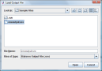

You can quickly load previous output generated by Statsres which will be displayed in the Output box. Go to the menu bar and click File and then Load and then Output. On the dialog box, choose the required file - it must have a .sro (Statsres Output File) extension. After loading, the output will appear in the Output box as if you had just processed the file. Wonderful! Alternatively, you can view the output file through any text editor.